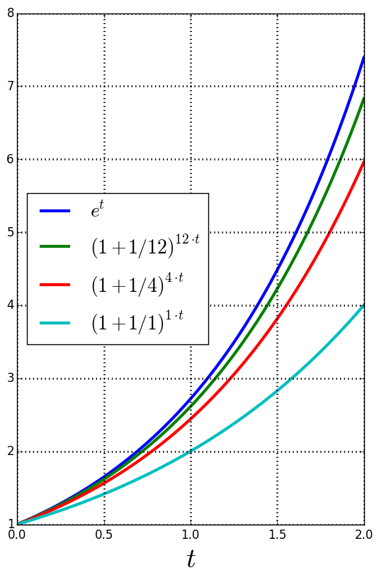

| « 4.5 | up | 4.7 » |
4.6 — Compound Interest
Compound interest is concerned with the relationship between a number of variables:- $P$ - is called the present value or principle value. It the amount of some substance (often money) at an initial point in time ($t=0$).
- $r$ - is called the annual interest rate or nominal rate. This value determines the rate of growth of the principle.
- $n$ - is the number of times the principle is compounded annually.
- $A$ - is called the future value ($A$ for accrual or accumulation). It represents the amount the principle grows after a certain time, $t$, at a particular rate, $r$, and compounded $n$ times per year.
Determine the future amount of a loan of \$20,000 which is compounded monthly at 10% after 4 years.
$A = 20000 \cdot (1+\frac{0.1}{12})^{48} \approx \$29,787$
If an investment pays 5.5% compounded quarterly, how much should you deposit now to have \$900 in two years?
$P = \displaystyle \frac{900}{(1+\frac{0.055}{4})^8} \approx \$807$
How long will it take money to triple if it is invested at 10% compounded quarterly?
$\displaystyle \frac{\ln3}{4\ln\left(1+\frac{0.1}{4}\right)}$
Continuously Compounded Interest
Recall the number, $e \approx 2.72$. It turns out that $$ \left(1+\frac{r}{n}\right)^{nt} \rightarrow e^{rt} \;\; \text{as} \;\; n \rightarrow +\infty $$ Consider when $r=1$ in the graphs below:
Consider when $r=t=1$. Then: \begin{align*} (1+1/10)^{10} &\approx 2.59 \\ (1+1/100)^{100} &\approx 2.70 \\ (1+1/1000)^{1000} &\approx 2.72 \end{align*} Hence, when a loan is compounded continuously, the formula for future value given the principle, rate, and time is: $$ A = Pe^{rt} $$
What is the amount in 5 years of \$9,351 invested at 6.9% compounded continuously?
$9351 \cdot e^{0.345} \approx \$13,203$
How many years will it take for an investment of \$30,000 to grow to \$80,000? Assume a rate of interest of 4% compounded continuously, and state the answer in terms of the natural logarithm.
$\displaystyle \frac{\ln\left(\frac{8}{3}\right)}{0.04} \approx 17.3$ years
What interest rate will triple an investment in 5 years if it is compounded continuously?
$\displaystyle \frac{\ln(3)}{5} \approx 22\%$
The Effective Rate
The effective rate for compound interest is the rate that would yield the same future value as a rate compounded $n$ times per year, but only compounded once.Given some rate, $r$, and times compounded, $n$, the effective rate (call it $\tilde{r}$) satisfies this relationship: $$ P\left(1+\frac{\tilde{r}}{1}\right)^{1\cdot t} = P\left(1+\frac{r}{n}\right)^{nt} $$ So, we can solve for the effective rate, $\tilde{r}$: $$ \tilde{r} = \text{effective rate} = \left(1+\frac{r}{n}\right)^{n} - 1 $$ (Note: $\tilde{r}$ is not standard notation for the effective rate. It is just used the notation as a placeholder in deriving the formula for effective rate.)
Find the effective rate of interest for 5.5% compounded quarterly.
$\displaystyle \left(1+\frac{0.055}{4}\right)^{4}-1$